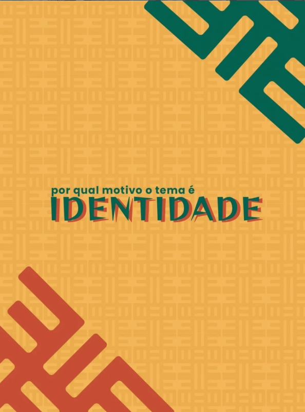

O evento Consciência Negra, realizado pela Escola Culto à Ciência, tem como principal objetivo valorizar a identidade cultural negra e reconhecer sua importância na formação da sociedade brasileira.
A cultura afro-brasileira está presente em diversos aspectos do nosso cotidiano, como na música, na dança, na literatura, na culinária, na arte, na religiosidade e em diferentes manifestações culturais que fazem parte da história do país.
Preservar e conhecer essa herança cultural é uma forma de reconhecer a resistência, a trajetória e as contribuições da população negra ao longo dos séculos, destacando a riqueza de suas tradições e o impacto de seu legado na construção da identidade nacional.
A valorização da identidade cultural fortalece o respeito à diversidade, combate estereótipos e incentiva a reflexão sobre a importância da igualdade, contribuindo para uma sociedade que reconhece e preserva a memória, a história e a cultura afro-brasileira como parte essencial do patrimônio cultural do Brasil.

A identidade é o que nos conecta com nossa história, nossas raízes e nossas lutas.
Na escola, refletir sobre identidade é fundamental para compreender quem somos, de onde viemos e como podemos construir juntos um futuro de respeito, diversidade e valorização da negritude.
O Festival Negritude em Foco: Identidade nasce para mostrar que identidade é muito mais do que rótulos ou estereótipos: é cultura, é potência, é VOZ!
Aqui, identidade é movimento, é encontro, é reconhecimento.
E, acima de tudo, é celebração daquilo que nos torna únicos e, ao mesmo tempo, parte de uma comunidade viva e pulsante.